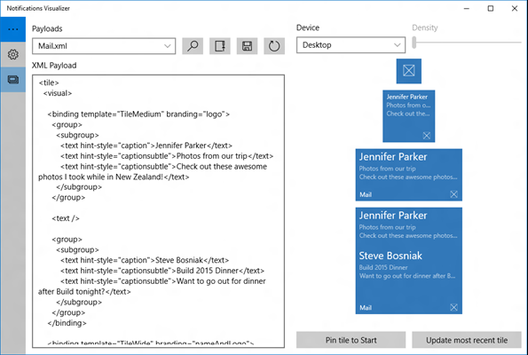
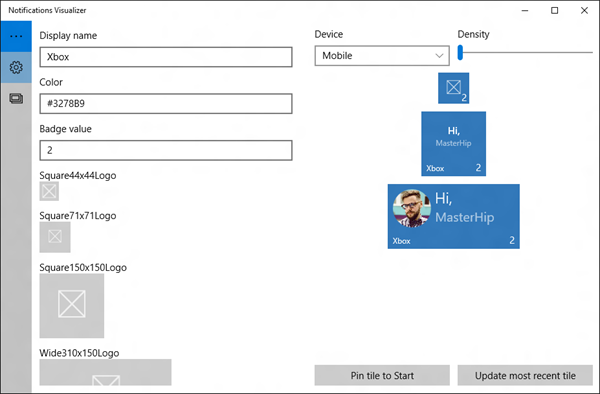

Notifications Visualizer
Notifications Visualizer is a new Windows app in the Store that helps developers design adaptive Live Tiles and interactive toast notifications for Windows 10.
Overview
Notifications Visualizer provides instant visual previews of your tile and toast notification as you edit the XML payload, similar to Visual Studio's XAML editor/design view. The app also checks for errors, which ensures that you create a valid tile or toast notification payload.
This screenshot from the app shows the XML payload and how tile sizes appear on a selected device:

With Notifications Visualizer, you can create and test adaptive tile and toast payloads without having to edit and deploy your own app. Once you've created a payload with ideal visual results, you can integrate that into your app. See Send a local tile notification (UWP) and Send a local toast to learn more.
Note Notifications Visualizer's simulation of the Windows Start menu and toast notifications isn't always completely accurate, and it doesn't support some advanced payload properties. When you have the tile or toast you want, test it by pinning the tile or popping the toast to verify that it appears as you intend.
Features
Notifications Visualizer comes with a number of sample payloads to showcase what's possible with adaptive Live Tiles and interactive toasts to help you get started. You can experiment with all the different text options, groups/subgroups, background images, and you can see how the tile adapts to different devices and screens. Once you've made changes, you can save your updated payload to a file for future use.
The editor provides real-time errors and warnings. For example, if your payload is greater than 5 KB (a platform limitation), Notifications Visualizer warns you that your payload exceeds that limit. It gives you warnings for incorrect attribute names or values, which helps you debug visual issues.
You can control tile properties like display name, color, logos, ShowName, and badge value. These options help you instantly understand how your tile properties and tile notification payloads interact, and the results they produce.
This screenshot from the app shows the tile editor:
